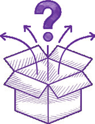
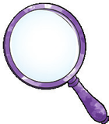
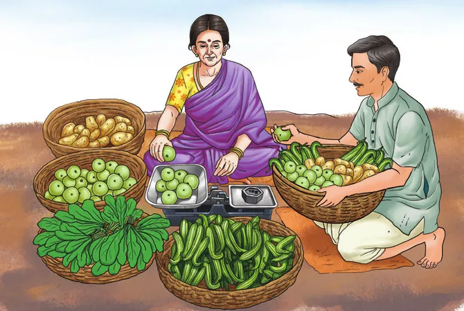
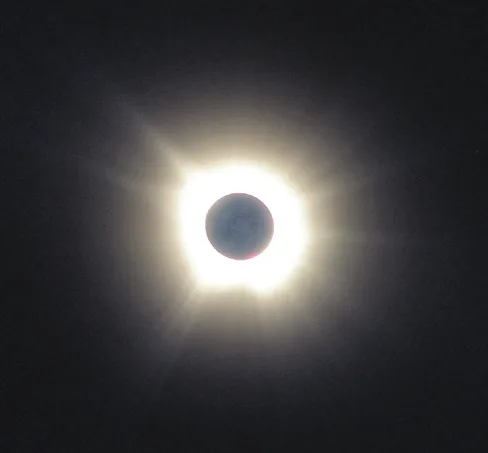
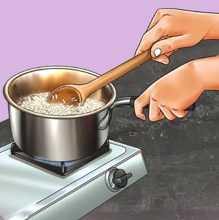
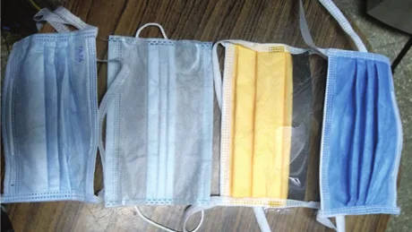

In the middle stage, science invited you to be curious and observe the world closely, to ask questions, and to find out how things work. In our journey, we discovered that science began with wonder and grew through careful experiments. We connected ideas across the world of the living and non-living. As you now enter the secondary stage, this journey continues, but with an emphasis on deep exploration. Science is not only about what we know, but also about how we know it — how observations lead to measurements, how patterns are expressed using symbols and equations, how models are built to represent complex systems, and how ideas are tested, often revised, and sometimes even discarded. In our secondary stage, textbook of science, Exploration, we will look more closely, think more carefully, and find out how scientific ideas help us make sense of nature, technology and our place within them.
To reflect the approach of this textbook, the page numbers have been thoughtfully designed, and are framed by a magnifying glass and a compass. The magnifying glass symbolises careful observation — noticing patterns and paying attention to what might otherwise be missed. The compass reminds us that exploration also needs direction — choosing appropriate models, asking the right questions, and knowing the limits of where our ideas apply. Together, they tell us that exploration in science is not wandering aimlessly, but trying to make sense of our world with care and purpose.
The natural world is complex, and studying it in full detail is often impossible. To make sense of this complexity, science uses models. These are simplified ways of looking at real systems that focus only on what is most important for a given question. In physics, a moving car may be represented as a single point, while in chemistry, atoms and molecules are drawn as spheres and bonds. In biology, cells are shown as diagrams highlighting key parts, and in earth science, the Earth may be treated as a smooth sphere layered into distinct regions. Building such models involves making assumptions and deliberately ignoring certain details. For example, when studying the motion of a falling object, air resistance may be neglected to understand the basic effect of gravity. In biology, when studying how the heart pumps blood, many individual cells are ignored so that the organ can be understood as a functioning system. Remember that these choices are not mistakes, they are done on purpose to keep things simple enough, but still allow us to find answers to what we are looking for.
Think of a cricket ball being hit for a six. You want to make a simple model. What details would you include? What would you ignore?
Answer:We must ask, "Will the ball cross the boundary without hitting the ground first?". For this, things like the brand of the bat, the colour of the ball, the amount of grass on the field will make no difference. On the other hand, the mass of the ball, and the speed and direction in which it has been hit will be very important. Air resistance, the spin of the ball, and the stitching of the threads at the seam have smaller effects that can be ignored in a simple model. As we build more and more complex models, we add extra details for greater accuracy.
Suppose you ride a bicycle from your school to your home. You want to model the time it takes to go home from school. What details would you keep? What details could you ignore? Suggest why ignoring some details may actually be useful.
As you explore science more deeply, you will notice that it uses language in a very careful and precise way. Many words that we use in everyday life, such as force, work, cell, or reaction, have specific meanings in science. These meanings are often very specific because scientific ideas must be communicated clearly and unambiguously. To allow scientists across the world to describe observations, compare results, and build ideas together, science uses a shared language of these specific terms, symbols, and units. Quantities, such as mass, velocity, force, and electric current are represented by symbols like m, v, F, and I, each associated with a defined unit.
To make this even more precise, science often turns to mathematics to allow relationships between quantities to be expressed clearly and tested carefully. This can sometimes feel
challenging, but it is important to remember that mathematics in science is not meant to be a hurdle. Instead, it is a language that helps us think more clearly about the world. An equation is not just a calculation tool, it is a compact statement about how certain things are related. For example, describing motion using quantities, such as distance, time, and velocity allows us to answer questions about where an object will be at a later moment. In the same way, mathematical expressions are used to describe rates of chemical reactions, patterns of population growth, or changes in energy within a system. Learning to use mathematics in science does not mean memorising equations. It means understanding the situation first, identifying relevant quantities, and then using mathematical relationships to reason carefully. In this way, mathematics becomes a powerful language for thinking, not just for finding numerical answers. If you focus first on understanding the situation and the quantities involved, equations will begin to feel less like obstacles and more like helpful guides in your exploration of science.

In a well-known incident, a passenger aircraft ran out of fuel mid-flight due to a mix-up in units. The flight needed 22,300 kg fuel in total, but the ground crew miscalculated the fuel required, since they used the density of fuel in pounds (lb) per litre rather than kilograms (kg) per litre. The aircraft was about 15,000 litres short of fuel and luckily could glide to an emergency landing, which damaged the aircraft though there were no casualties. Pounds and kilograms are very different. Using standard (SI) units everywhere avoids conversions and errors.

Threads of Curiosity
Why is a kilogram used everywhere?
When we buy rice or vegetables we expect a kilogram to mean the same amount everywhere (Fig. 1.1). Imagine the confusion if we used different weights everywhere! Thankfully, measurements are based on agreed international standards, not local objects or opinions. Standard units allow scientific results to be compared, and ensure fairness in daily life and trade.
As observations are repeated, measurements refined, and ideas tested through experiments, we can organise our understanding of the world in a systematic way. In the secondary stage, you will come across terms, such as laws, theories, and principles — terms that have specific meaning in science. A law usually describes a regular pattern observed in nature, often expressed using words or mathematical relationships. For example, Newton's laws of motion explain the jerk felt when a bus stops suddenly.
A theory goes a step further and provides an explanation of why those patterns occur, usually based on evidence gathered over time and available at that time. For example, the atomic theory explains how molecules are formed. Principles are broad ideas that help us make sense in a given situation. For example, the principle of conservation of energy being applied when climbing up the stairs.
Do remember that in science, a theory does not mean a guess or an untested idea, it is an explanation based on careful testing and critical examination. These ideas are always open to improvement and often change as new evidence becomes available. This is a key feature of science that makes it reliable.
One of the most remarkable strengths of science is its ability to make predictions. When laws, theories, and models are well established, they allow us to anticipate what will happen under new or different conditions, before we can perform an experiment, and in many cases even if we cannot perform an experiment. Using ideas about motion, we can predict how far a kicked football will travel; using knowledge of chemical reactions, we can estimate how much carbon dioxide will be produced, or how soft a baked bread would be; using biological principles, we can predict how one's breathing would change while running. Remember that these predictions are not guesses, they are reasoned expectations based on evidence and careful thinking. When predictions match observations, confidence in the underlying science grows. But even more important, when they do not, scientists re-examine their assumptions, models, or measurements. In this way, prediction is a powerful tool that drives further exploration and a deeper understanding of the world.
Varsha told her friend Meghna, "It will rain this afternoon because the clouds look dark". Think of some questions Meghna could ask Varsha to make this prediction scientifically testable.
Answer:Good scientific questions will look for measurable evidence and past patterns. Questions with simple yes/no answers are usually not so useful. Meghna could ask Varsha questions like (these are just examples) "What was the condition of sky when it rained the last time? What is the humidity today? Was it above 80 per cent the last time it rained? What is today's wind speed and direction? Is the temperature dropping like it did before the recent rains?". Questions like these ask about measurable data and past patterns, which go beyond mere 'clouds look dark'.
Weather depends on many changing factors, such as temperature, pressure, humidity, and wind. Weather forecasts use measurements and models, but very tiny differences in conditions can grow over time and lead to something completely different. This is why forecasts are usually reliable for a few hours or even a few days, but less certain further into the future.
Even the most successful scientific theories have limits and may fail when new conditions are explored or when measurements become more
precise. Such failures are not a weakness of science; in fact, they are its greatest strength. When predictions do not match observations, scientists do not reject ideas based on opinion or belief, but only on evidence. No scientific theory is ever final and none is beyond question. This openness to being corrected by nature itself is what has allowed science to help us in understanding the world we live in.

Checking 'viral' claims on social media: Is eating food harmful during an eclipse?
A commonly circulated claim is that, "Food should not be eaten during an eclipse because it becomes harmful". Disproof comes from asking simple scientific questions. An eclipse is just a play of shadows (Fig. 1.2). What physical change occurs during an eclipse? Does temperature change significantly? Does food go bad if it is left in a shadow? You will conclude that no physical, chemical, or biological mechanism supports such a claim.
As you continue your journey through science in Grades 9 and 10, you will gradually develop habits of thinking that are useful far beyond the classroom. A helpful strategy is to first understand the situation being studied, then identify the quantities that matter, and finally make a rough estimate to check whether an answer makes sense. Exact values are not always necessary, especially in the early stages of reasoning. Often, an approximate estimate is enough to tell us whether a result is reasonable or impossible. Learning to estimate helps you build intuition, detect errors, and develop confidence in your thinking. Science values careful reasoning perhaps much more than accurate calculations!

To make a rough estimate, assume that all their calorie needs come from rice alone (Fig. 1.3). An average adult needs about 2000–2500 kilocalories (kcal) per day. Find out how many calories 100 g of uncooked rice provides when cooked and use this to estimate the daily requirement for the family. The aim is not to get an exact number, but to check whether the answer makes sense as 100 g for a month is clearly too little, while a few tonnes is far too much. Such estimation helps connect science to everyday questions about food and resources, and shows why approximate reasoning is an important scientific skill.
Estimate how many litres of air you breathe in one day. Start by estimating how many breaths you take per minute, and the volume of one breath. Your aim is not to find an exact answer, but a reasonable estimate.
Answer:At rest, we take about 12–15 breaths a minute, and there are \(60 \times 24 = 1440\) minutes in a day, so we take roughly 18–22 thousand breaths, about 20 thousand breaths a day. We also need to find the volume of air in one breath. One way to estimate this is to think that it takes about 4–5 breaths to fill a typical rubber party balloon, which when inflated has a volume of about 2 litres. So, one breath is perhaps about 0.5 litre. Hence, we breathe in about 10,000 litres of air a day!
Now, it is hard to see if this estimate is reasonable or not. But if we go back to our balloon example, one could blow up a balloon in about 20 s, so maybe we could fill 3 balloons a minute. Multiplying
3 balloon minute × 2 litres balloon × 1440 minutes day will give about 8640 litres,
which for estimation purposes is reasonably close to our earlier estimate of 10,000 litres. Naturally, we would get extremely tired very quickly after blowing balloons nonstop, unlike normal restful breathing.
- Describe one situation where an approximate answer is good enough, and one where you would need a very exact value.
After Grade 10, if you decide to study science, it will be divided into branches like physics, chemistry, biology and earth science, and even in Grades 9 and 10, the chapters you have will focus on some of these areas. We've highlighted some of the exciting things you may learn about in the Next Level Up boxes. However, do remember that the natural world does not have any such boundaries. These divisions are made by us to only help organise knowledge, they are not independent of each other. Most of the real-world problems today, such as understanding climate change, developing medicines, or designing sustainable technologies require ideas from several disciplines together. Science also connects naturally with mathematics, technology, arts, and social sciences. To make sense of the world fully, we need to connect multiple ways of knowing and expressing ideas, each enriching the other.
- Choose a real-life object (maybe a pressure cooker or a mobile phone) or a problem (maybe a traffic jam near your school). Make a sketch listing what kind of ideas from physics, chemistry, biology, earth science, or mathematics are involved. Show how at least two branches of science connect with your example.

Solving real problems requires knowledge from several branches of science. During the COVID-19 pandemic, we all used masks for safety (Fig. 1.4). Understanding how a mask works requires concepts from physics (particle motion and electrostatic attraction), chemistry (properties of polymer fibres), biology (size and behaviour of viruses), and mathematics (modelling airflow and filtration efficiency).
Finally, as we have mentioned in every textbook, science is not just a collection of facts, equations, or experiments. It is a human activity shaped by curiosity, creativity, collaboration, and careful questioning. It grows as people ask questions, test ideas, share results, and learn from mistakes. Science develops over time through the work of many individuals across different cultures and generations. Even if you do not choose to study science beyond Grade 10, scientific thinking will be very important in whatever you do. It helps you understand the technology that surrounds you, and helps you evaluate information critically and make sense of the world you live in. As you begin this stage of exploration, science invites you not only to learn about the world, but also to learn 'how' we are trying to understand it.
Embark on your journey of discovery — looking carefully through the magnifying glass of evidence and guided by the compass of curiosity.
Happy Exploring!